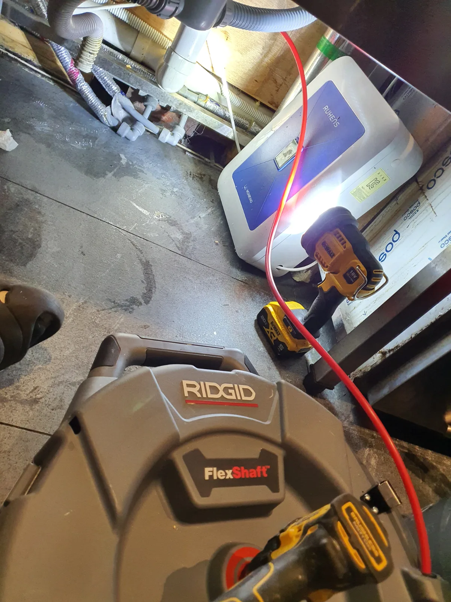
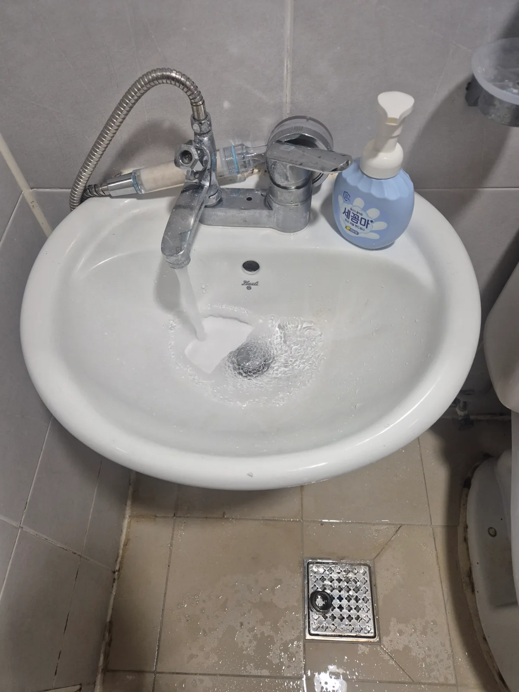
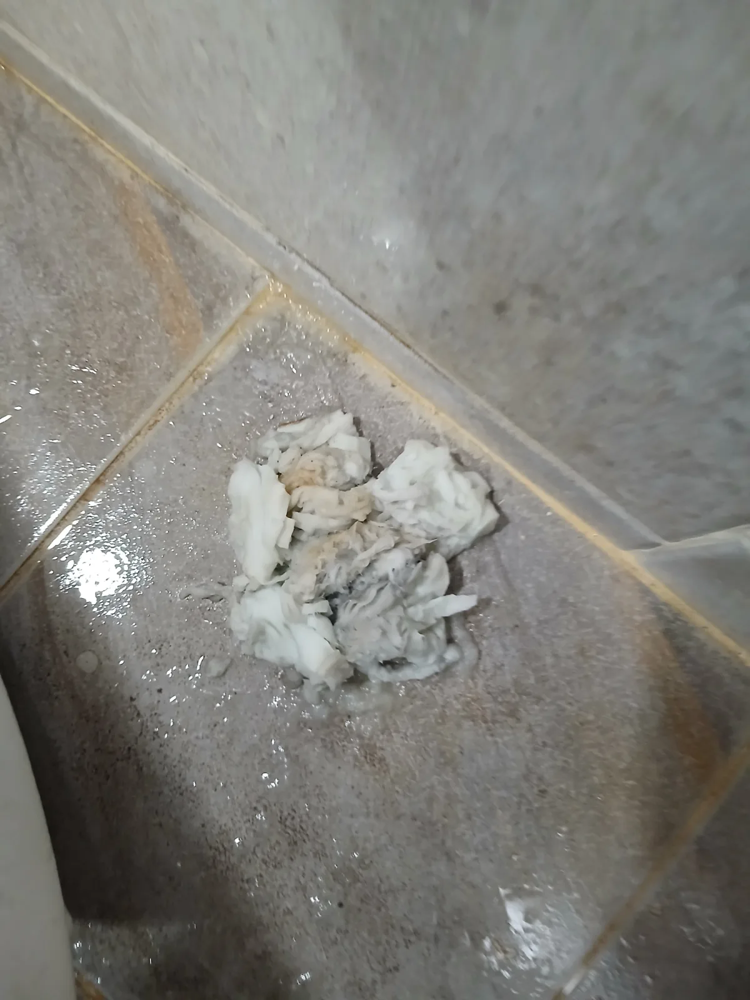
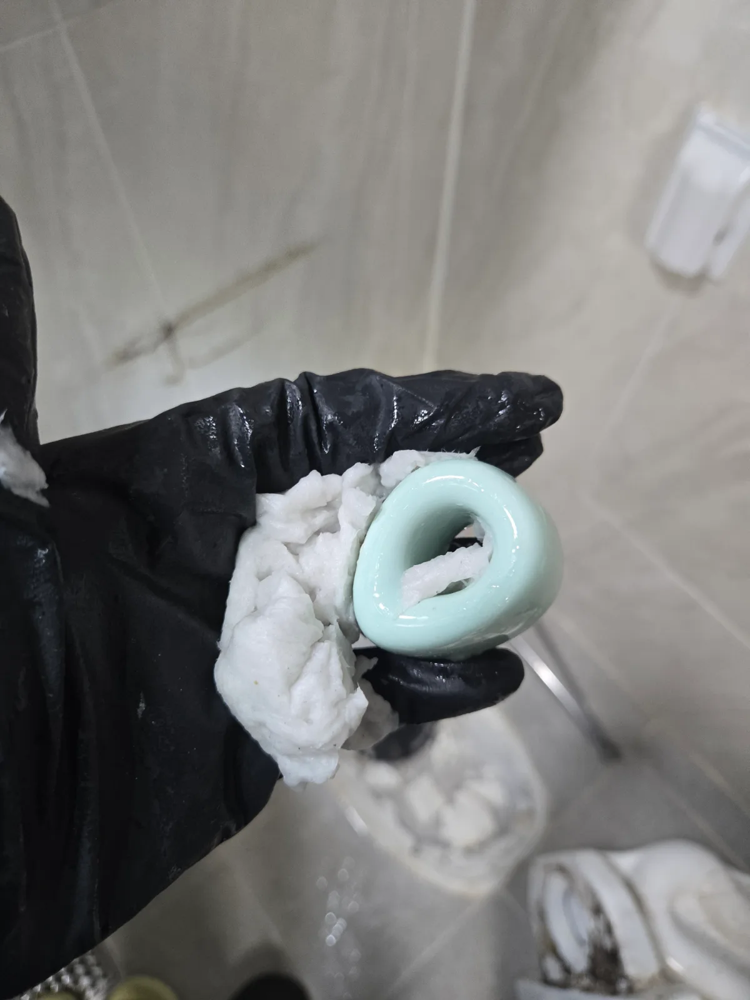

동작구 신대방동 하수구막혔을때 변기막힘 사례, 변기 출구에 걸린 플라스틱 제거 사례
배수 불편의 원인이 변기 하부에 남은 플라스틱이었던 현장입니다. 탈거 후 이물질을 꺼내고 재부착과 정상 통수 확인까지 진행했습니다.
서울 · 동작구
신라건축설비가 동작구에서 직접 진단하고 해결한 실제 작업 기록입니다.
배수 불편의 원인이 변기 하부에 남은 플라스틱이었던 현장입니다. 탈거 후 이물질을 꺼내고 재부착과 정상 통수 확인까지 진행했습니다.

변기 하부에 걸린 플라스틱을 꺼내기 위해 탈거와 재부착을 진행한 사례입니다. 금액보다 실제로 필요한 작업 범위를 중심으로 소개합니다.

오수관 아래로 넘어가지 않고 변기 출구에 걸린 플라스틱을 제거했습니다. 변기 탈거와 재부착, 마감 및 정상 통수 확인까지 진행했습니다.

변기 하부에 걸쳐 있던 플라스틱을 탈거 후 제거했습니다. 오수관 아래로 내려가기 전에 회수하고 변기를 재설치한 신라건축설비 작업 기록입니다.

뚜껑·마개 형태의 플라스틱이 변기 하부에 걸린 현장입니다. 변기를 탈거해 이물질을 꺼낸 뒤 재부착하고 정상 통수까지 확인했습니다.

동작구 사당동 변기막힘 변기 탈거 후 하부 배출구의 휴지와 음식물을 제거하고 에어건 작업과 백시멘트 마감 및 정상 통수 확인을 마쳤습니다

동작구 상도동 싱크대막힘 내시경 진단 후 샤프트 배관스케일링으로 기름 슬러지와 음식물 찌꺼기 제거 및 통수 확인

동작구 노량진동 하수구막힘 면접 전날 막힌 세면대 배관을 점검하고 석션으로 머리카락과 비누 찌꺼기를 제거해 배수 확인

동작구 대방동 변기막힘 석션 후 변기를 탈거해 내부 청소포를 제거하고 에어건으로 추가 작업한 뒤 재설치 및 배수 확인

동작구 상도동 변기막힘 석션 작업 후 오수관 입구의 도기 칫솔받침대를 제거하고 에어건으로 내부 배관 정리